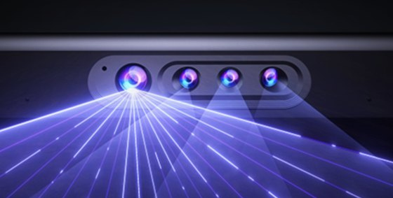
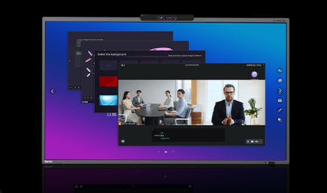
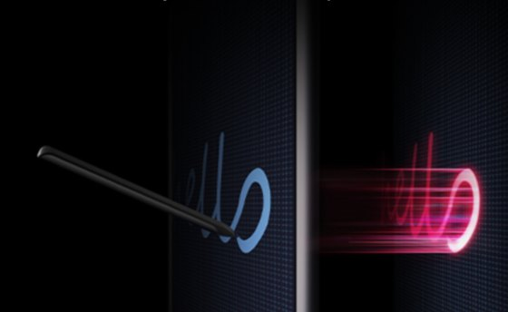
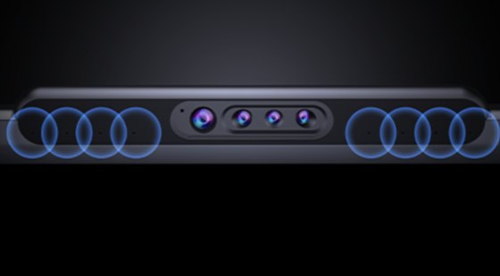

ALL-IN-ONE EXCELLENCE
すべてが高品質な機能
WORXHUBは、会議の質を高めるために
細部までこだわり抜いた高品質な機能を搭載しています。

01
AI広範囲
カメラ搭載
超広角レンズとAI技術で、
部屋全体を鮮明に映し出します。
{{ icons.wide }}
超広角
レンズ
{{ icons.aiBadge }}
AI自動
最適化
{{ icons.face }}
人物・顔
自動認識
{{ icons.sun }}
明るさ・画角を
自動調整

02
複数のウィンドウを
同時サポート
複数のアプリや資料を同時に表示・操作。会議やプレゼンをより効率的に進められます。
{{ icons.grid }}
マルチ
ウィンドウ
{{ icons.split }}
画面分割
表示
{{ icons.swap }}
アプリ間の
スムーズな切替

03
スムーズな体験
高精度タッチと低遅延で、自然で直感的な操作を実現。書き心地も滑らかでストレスフリー。
{{ icons.pen }}
低遅延
タッチ
{{ icons.target }}
高精度
書き込み
{{ icons.bolt }}
高速応答で
サクサク操作
{{ icons.tap }}
なめらかな
書き心地

04
AI音響
エンジン3.0
AIが環境ノイズを自動で除去し、話者の声をクリアに拾います。遠くの声も、はっきりと届けます。
{{ icons.wave }}
AIノイズ
キャンセル
{{ icons.mic }}
エコー
除去
{{ icons.focus }}
話者の声を
自動フォーカス
{{ icons.group }}
最大12mの
集音範囲
会議室に必要なすべてを、これ一台に。
WORXHUBは、あなたのビジネスを次のステージへ導きます。
資料ダウンロード